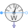

TestSensors |
|
Diagram
{kind=link}
Information
This information is part of the Modelica Standard Library maintained by the Modelica Association.
Test quasi-static polyphase sensors: A sinusoidal source feeds a load consisting of resistor and inductor.
Parameters (9)
| VRMS |
Value: 100 Type: Voltage (V) Description: Nominal RMS voltage per phase |
|---|---|
| f |
Value: 50 Type: Frequency (Hz) Description: Frequency |
| R |
Value: 1 / sqrt(2) Type: Resistance (Ω) Description: Load resistance |
| L |
Value: 1 / sqrt(2) / (2 * pi * f) Type: Inductance (H) Description: Load inductance |
| Z |
Value: sqrt(R ^ 2 + (2 * pi * f * L) ^ 2) Type: Impedance (Ω) Description: Load impedance |
| IRMS |
Value: VRMS / Z Type: Current (A) Description: Steady state RMS current |
| P |
Value: 3 * R * IRMS ^ 2 Type: ActivePower (W) Description: Total active power |
| Q |
Value: 3 * (2 * pi * f * L) * IRMS ^ 2 Type: ReactivePower (var) Description: Total reactive power |
| S |
Value: 3 * Z * IRMS ^ 2 Type: ApparentPower (V·A) Description: Total apparent power |
Components (20)
| sineVoltage |
Type: VoltageSource |
|
|---|---|---|
| star |
Type: Star |
|
| ground |
Type: Ground |
|
| resistor |
Type: Resistor |
|
| inductor |
Type: Inductor |
|
| starLoad |
Type: Star |
|
| currentQuasiRMSSensor |
Type: CurrentQuasiRMSSensor |
|
| feedbackI |
Type: Feedback |
|
| constI |
Type: Constant |
|
| voltageQuasiRMSSensor |
Type: VoltageQuasiRMSSensor |
|
| feedbackV |
Type: Feedback |
|
| constV |
Type: Constant |
|
| powerSensor |
Type: PowerSensor |
|
| complexToReal |
Type: ComplexToReal |
|
| feedbackP |
Type: Feedback |
|
| realExpression |
Type: RealExpression |
|
|  | aronSensor |
Type: AronSensor |
| feedbackPAron |
Type: Feedback |
|
| reactivePowerSensor |
Type: ReactivePowerSensor |
|
| feedbackQ |
Type: Feedback |